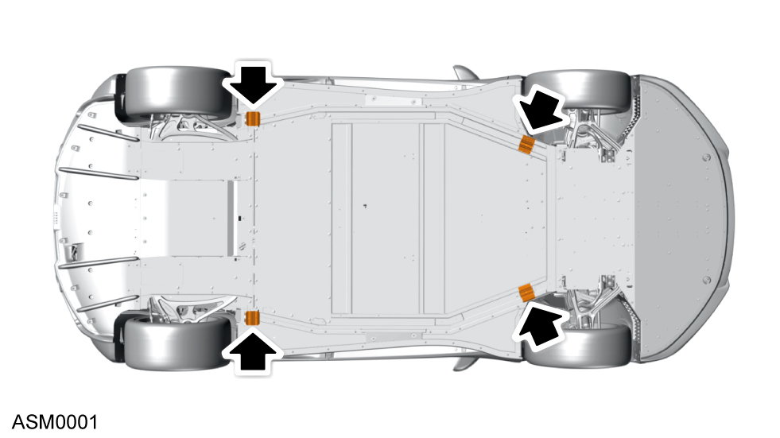

Raise and Support Vehicle - 2 Post Lift
Print
Operation Code: 00.10.00-01
Lift
- Position the vehicle in the centre of two post lift.
 CAUTION: Do not jack or support the vehicle on any other points than those indicated. Failure to comply is likely to result in damage to the body or chassis components.
CAUTION: Do not jack or support the vehicle on any other points than those indicated. Failure to comply is likely to result in damage to the body or chassis components.

- Position lift arms under lifting points on both sides of vehicle. Refer to illustration for lifting point locations.
- Lift vehicle until wheels are clear of the ground then check the stability of vehicle on the lift. If necessary lower lift and reposition vehicle and lift arms.
 WARNING: Never work on an incorrectly supported vehicle.
WARNING: Never work on an incorrectly supported vehicle.
- Raise vehicle to required height.
WARNING: Removing large or heavy components can affect the stability of the vehicle. Always check the stability of vehicle during procedures that remove large or heavy components.
Lower
- Lower the vehicle to the floor.
WARNING: Risk of injury. Remove hands and feet from any moving parts. Keep hands and feet clear of car and lift when lowering.
CAUTION: Risk of damage to vehicle and tools. Remove tools and components from under the vehicle before lowering.
- Remove lift arms from underneath vehicle.
- Remove vehicle from twin post lift.